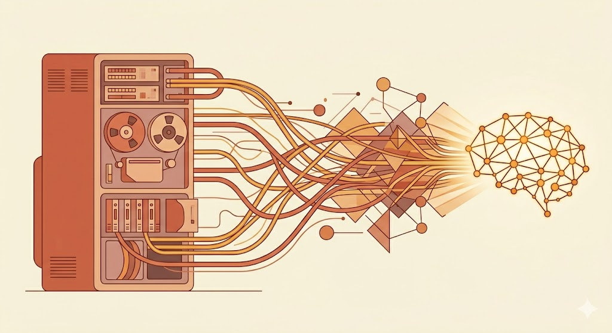
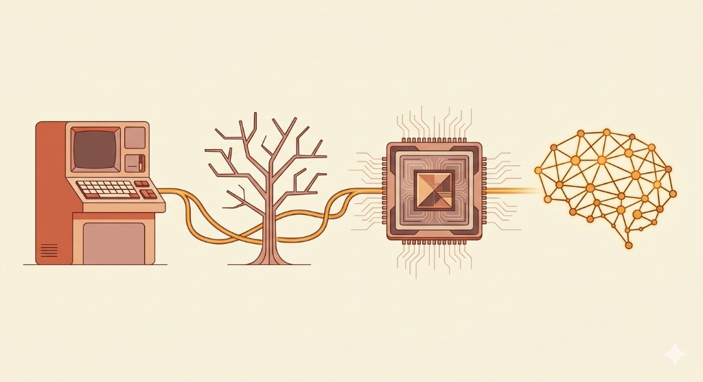

From a single question in 1950 to the tools you use every day — told in reverse.

It writes your emails, recognizes your face, drives your recommendations, and generates images from a sentence. What once lived in research labs now lives in your pocket.
ChatGPT brought AI into everyday conversation. Copilot changed how developers write code. DALL-E turned text prompts into visual art. Voice assistants understand and speak in real time. The technology has become invisible — embedded in tools billions of people use daily.

AI stopped following instructions and started learning on its own. Deep learning cracked problems that hand-coded rules never could — and everything accelerated.
Before 2012, humans wrote the rules and AI followed them blindly. After AlexNet won ImageNet, the paradigm shifted: show the machine enough examples and it figures out the rules itself. Vision, speech, and language understanding all surged forward on the back of more data and faster GPUs.
For decades, AI could only do what engineers explicitly told it to. Decision trees followed rigid logic paths that couldn't adapt. Expert systems handled narrow domains like medical diagnosis but collapsed outside their training.
The hard ceiling was clear: hand-coded rules couldn't handle the real world's messiness and ambiguity. AI needed a fundamentally different approach — one that would take another 20 years to arrive.
In 1950, Turing published Computing Machinery and Intelligence and proposed something radical: what if machines could think?
"Can machines think?"
That one question launched the entire field.
One question → decades of rules → a breakthrough in learning → AI everywhere.
70 years of progress, one scroll.